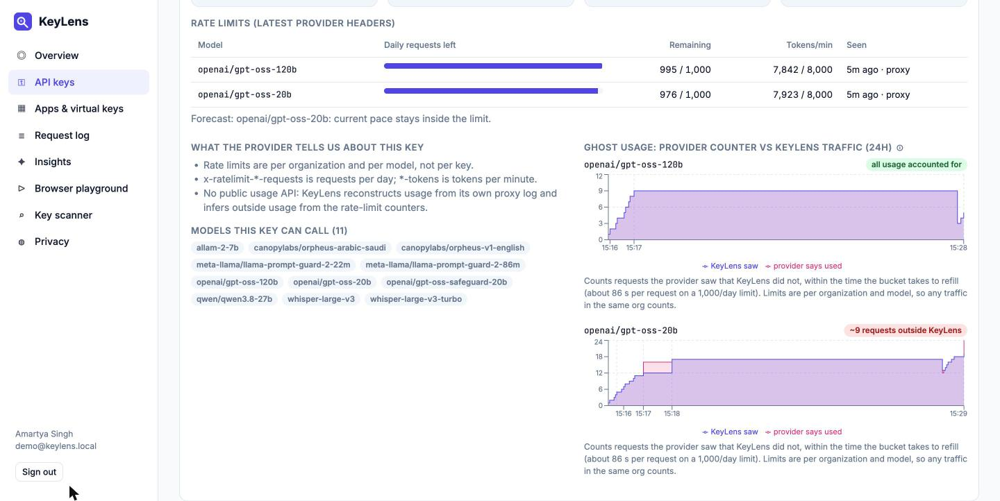
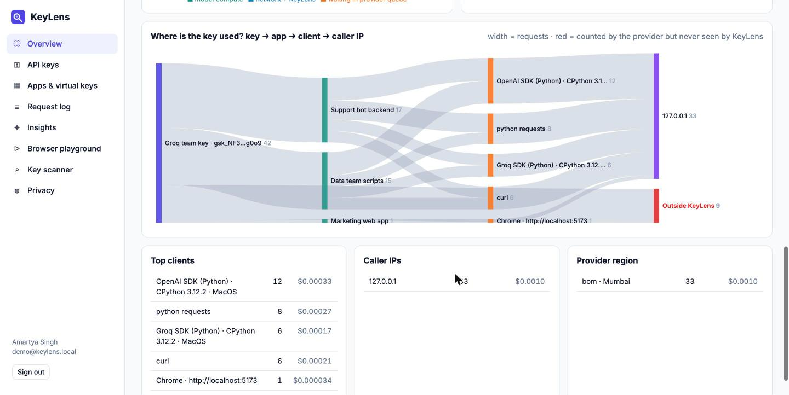
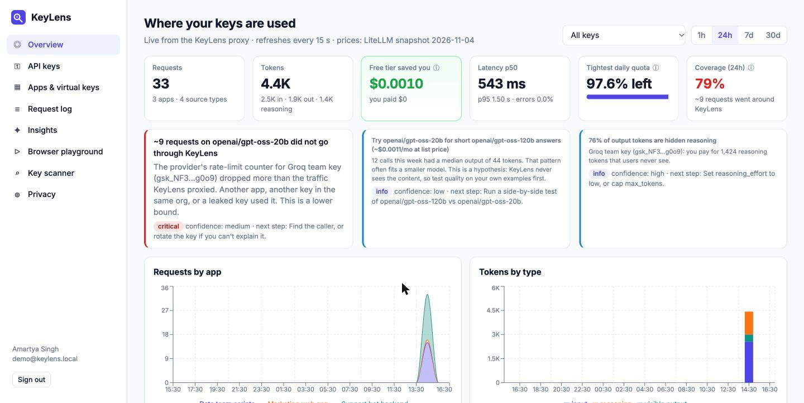
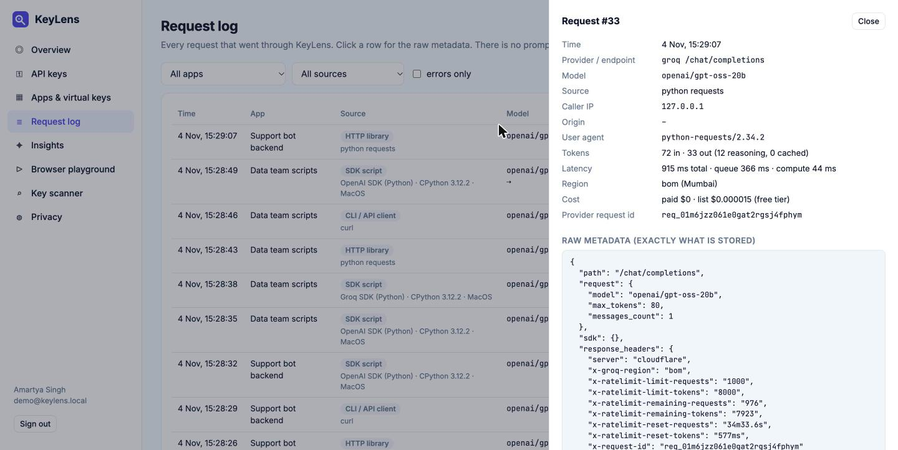
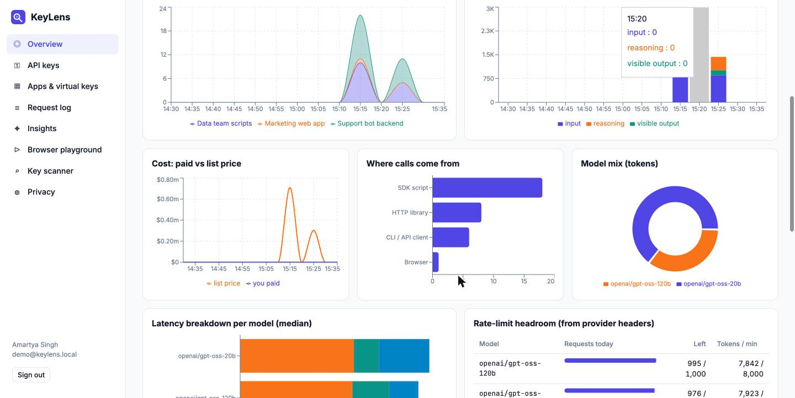

I started with a narrow question: if all I have is an API key, can I find out where it is being used? I checked each provider's docs and made live calls with a Groq key. The honest answer is mostly no:
| Provider | What a normal key can learn about itself | Per-key usage needs |
|---|---|---|
| Groq | Model list only. There is no usage API (404 on every usage path). But every response carries rate-limit counters, queue and compute time, and a region code. | Not available (enterprise metrics are per project, not per key) |
| xAI (Grok) | GET /v1/api-key: name, ACLs, team, blocked flags. Responses report their own cost in cost_in_usd_ticks. | Management key: usage grouped by api_key_id and request_ip |
| OpenAI / Anthropic | Nothing beyond models and per-minute rate limits. | Separate admin key: usage by api_key_id |
| OpenRouter | GET /api/v1/key: usage, daily usage, limit, free-tier flag | n/a |
No provider tells a normal key holder where the key was called from. So two design decisions follow, and they match the design doc's principles:
kl_live_… virtual key and points its base_url at KeyLens. No code changes. KeyLens swaps in the real key and streams the answer back untouched.Backend: FastAPI + httpx (HTTP/2, streaming) + SQLite, about 1,900 lines. Frontend: React + TypeScript + Recharts, 9 pages. Prices come from a bundled snapshot of LiteLLM's public price list (732 models).
Groq returns x-ratelimit-limit-requests: 1000 (per day), remaining, and reset-requests, the time until the daily bucket is full again. Live check: after 1 request the reset was 86.4 s, after 2 it was 172.8 s. 86,400 s / 1,000 = 86.4 s. So the bucket refills one whole request every 86.4 s, and the header gives the number of requests spent recently:
What the first version got wrong: a continuous refill model with a fixed tolerance of 1.5. It under-counted (4 sent → 3 reported) and could invent ghosts after idle gaps, because Groq rounds the deficit up to a whole request. The review round simulated it. The fixed version re-anchors on every provider reading, credits only refills that must have happened, uses the time the headers arrived (not when the stream ended), ignores requests the provider never counted (5xx, 429), and turns itself off for per-minute windows, where an outside call refills before you can see it.
| Validation | Sent around KeyLens | Reported |
|---|---|---|
Live Groq, gpt-oss-20b, two rounds (4 + 5 direct calls) | 9 | 9 |
Live Groq, gpt-oss-120b (11-minute idle gap in between) | 0 | 0 |
| Simulated bucket, 1–10 outside calls next to KeyLens traffic | n | n (exact) |
| Simulated, idle gaps 1 min–5.5 h, 4 refill phases, no outside calls | 0 | 0 (never over-counts) |
| Simulated, outside calls before a 10-minute idle gap | 2n | 2n−1 to 2n (lower bound) |
Limits are per organization and model, so the dashboard words it as "used outside KeyLens" and never blames a specific key. The same numbers drive a coverage % (seen ÷ (seen + ghost)), which is the design doc's headline metric, here measured live.


| Signal (request headers only) | Label in the dashboard |
|---|---|
Mozilla/ UA + Sec-Fetch-Mode / Origin | Browser, e.g. "Chrome · http://localhost:5173" (host only, never the page path) |
OpenAI/Python, Groq/Python, x-stainless-runtime/os | "OpenAI SDK (Python) · CPython 3.12.2 · MacOS" |
curl/, PostmanRuntime/, python-requests/ | CLI / API client, HTTP library |
Review caught a real bug here: Node's built-in fetch also sends Sec-Fetch-Mode, so Node scripts were labelled "browser". The fix requires a browser user-agent as well. Labels are hints, since any client can fake a user-agent. The doc says so, and so does the UI.
gpt-oss, which becomes an insight with a fix ("set reasoning_effort low").cost_in_usd_ticks wins when present · Anthropic cache reads and writes are added back into input tokens · OpenRouter :free models cost $0 · dated aliases resolve, but -fast variants are never priced as the base model.


| Feature | Why it matters |
|---|---|
| Ghost usage + coverage % | The only signal here that a normal key can't get from any provider console. It catches leaked keys and unrouted apps. |
| Provider auto-detection | Paste any key; the provider is detected from its prefix and checked with free calls only (model list, the provider's own key-info endpoint). |
| Per-app kill switch and budget | Pause one app (HTTP 403) or cap it (429) without rotating the real key. Responses carry x-keylens-budget-used. |
| Quota forecast | "At this pace the daily limit runs out in ~N h", computed per model with the bucket aged forward. |
| Cheaper-model hypothesis | Short answers on a large model lead to a suggestion with $ saved at list price, labelled low confidence: test quality first, because content is never seen. |
| Key scanner | Finds where a key sits on disk and in shell history, whether git tracks it or has it in history, and rates the risk. Keys are only ever shown masked. It runs git with hooks disabled in untrusted repos. |
| Browser playground | Calls the proxy from a real browser, so the "Browser" source is demonstrated, not claimed. |
| Design-doc rule | Status | In the build |
|---|---|---|
| Metadata only; content never stored | met | No content columns. The canary test sends a unique prompt and reply (streaming and not) and fails if either appears anywhere in the database dump. Origins are stored as host only, and the raw metadata is capped at 4 KB. |
| Measured coverage, not claimed | met | Coverage % from ghost inference, on the home screen. |
| Reconcile provider data vs own observations | met | Rate-limit counters vs proxied traffic. Usage-API connectors (xAI management, OpenAI/Anthropic admin) are documented as the next step. |
| No code changes for customers | met | Only base_url and the API key change. Works with the OpenAI and Groq SDKs, curl and browsers. |
| Fail open; never break work | partly | Logging failures never break a request, and metadata is written after the response. If the KeyLens process itself is down, apps pointed at it fail. The doc's answer is a load-balancer bypass, which is not built here. |
| Own gateway only in v3 (in-path is the top risk) | deliberately broken | I built the in-path slice on purpose. It is the only slice one person can make real with live provider traffic in a few days, and it tests the riskiest claim: that metadata alone answers "where and how much". In the product I would still ship the zero-install connectors first. |
| Pseudonymous IDs, team floor ≥5 | not yet | Single-user tool. Raw IPs are kept for 30 days (configurable), because the IP is the "where". Hashing them and team aggregation come with multi-user orgs. |
docs/research.md.%23models path (now an endpoint allowlist) · DNS rebinding against the local API (trusted hosts) · cross-user queries missing user_id · Anthropic cache pricing · stream aborts losing events · gzip handling · scientific notation in tiny costs · the ghost model itself.test_privacy.py (canary text never stored) · test_proxy_rules.py (allowlist, kill switch, budget, bad keys, odd bodies, Host check) · test_ghost.py (never over-counts, exact for close readings).Run it: cd backend && pip install -r requirements.txt && uvicorn app.main:app · cd frontend && npm install && npm run dev · sign up → paste a key → create an app → call http://localhost:8000/v1 with its virtual key.